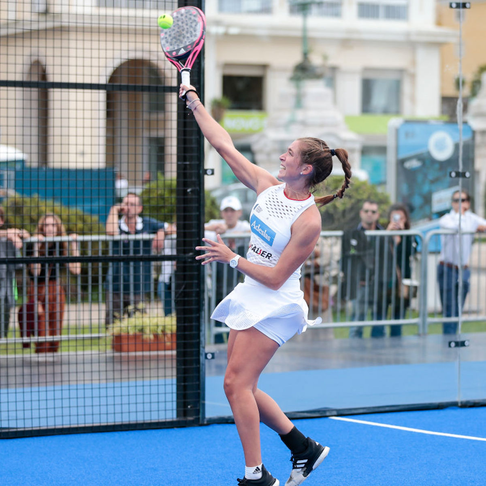

Padel
Yleistä
Padel on mailapeli, joka on saanut vaikutteita squashista ja tenniksestä. Padelia pelataan nelinpelinä, ja lajissa yhdistyvät urheilu, sosiaalisuus ja taktisuus. Padelin suosio selittyy lajin yksinkertaisuudella ja matalalla aloituskynnyksellä. Padelissa voimantuotto ei ole tärkeintä – sen sijaan keskeisessä asemassa ovat oikea tekniikka ja peliäly.
Välineet
Padelissa käytetty maila on tennismailaa lyhyempi ja pyöreähkö maila. Mailan pinta on rei’itetty, ja mailan sisäosat ovat vaahtomuovia. Mailan pinta on tyypillisesti tehty lasi- tai hiilikuidusta tai näiden kahden materiaalin sekoituksesta. Padelmailat voidaan jakaa ominaisuuksiltaan kolmeen eri kategoriaan: pyöreään, pisaran ja timantin muotoiseen mailaan. Pyöreä padelmaila sopii erityisesti aloitteleville pelaajille laajan osumakohtansa ansiosta. Laaja osumakohta mahdollistaa puhtaan osuman saavuttamisen pienemmällä taidolla. Pisaran muotoinen maila sopii taas keski- ja korkeantason pelaajille. Pisaran muotoisessa mailassa osumakohta on pienempi kuin pyöreässä mailassa, minkä takia mailaa ei suositella vasta-alkajille. Tämä maila sopii erityisesti kontrollia ja voimaa hakeville pelaajille. Timantin muotoinen maila sopii ammattitason pelaajille, jotka osaavat hallita ja soveltaa omia lyöntejään. Timantin muotoiset mailat ovat kärkipainoisia, mikä mahdollistaa lyönteihin korkeamman voimantuoton.
Padelpallot ovat lähes identtisiä tennispallojen kanssa. Padelpalloissa on kuitenkin se ero, että niissä on vähemmän painetta kuin tennispalloissa. Jos tennispalloja käyttää padelissa, pallo saattaa pongahtaa lasista liian lujaa, jolloin pelaaminen vaikeutuu huomattavasti.
Padelia pelataan aidatulla padelkentällä. Padelkentän mitat ovat 20m x 10m. Kenttää ympäröivät lasi- ja teräsverkkoseinät – kentän päätyseinät ovat lasia ja sivuseinät sekä lasia että teräsverkkoa. Kentän alustana toimii keinonurmi. Padelkentät ovat joko sisä- tai ulkokenttiä. Padelkengät ja tenniskengät soveltuvat kaikista parhaiten padelin pelaamiseen. Oikeanlaiset ja hyvät padelkengät ovat joustavat, mutta myös tukevat. Padelkengän pohja on sahalaitainen, joka mahdollistaa kengän pureutumisen kenttään nopeissa suunnanmuutoksissa.
Säännöt
Padelin säännöt ovat hyvin samanlaiset kuin tenniksessä. Padel-ottelut ovat aina nelinpelejä, mutta padelia voi harjoitella myös kaksinpelinä, jolloin pelaajat pelaavat ristiruutuihin. Jokainen erä sisältää kuusi peliä, ja ottelun voittaja on paras kolmesta erästä. Pisteenlaskussa pisteet ovat 15, 30, 40 ja peli. 40–40 tilanteessa pelin voittamiseksi tarvitaan kaksi peräkkäistä pistettä. Jos pelit päättyvät tasan 6–6 tilanteeseen, erä ratkaistaan tie-break pisteenlaskulla. Tie-break pelataan aina 7 pisteeseen ja voitto vaatii kahden pisteen eron.
Pelissä pallo pelataan aina vastustajan kenttäpuoliskolle. Pallo saa osua kenttää ympäröiviin teräsverkkoihin ja lasiseiniin, kunhan pallo osuu ensin maahan. Teräsverkko- tai lasiseinäosuman jälkeen pallo tulee palauttaa takaisin vastustajan puolelle. Pallo ei saa pompata kahta kertaa maahan samalla kenttäpuoliskolla. Maila tai pelaaja eivät saa koskettaa kentän verkkoa missään tilanteessa. Jos kentän verkkoa kosketetaan, vastustaja saa pisteen. Pelaaja voi lyödä pallon vastustajan puolella kenttää ainoastaan tilanteessa, jossa pallo kimpoaa omasta takalasista kohti vastustajan kenttäpuoliskoa. Pallon saa lyödä ulos kentältä vastustajan kenttäpuoliskon kautta – tällöin vastustaja voi juosta pallon perään kentän oviaukoista, jolloin pallo on mahdollista lyödä takaisin kentälle joko kentän oviaukosta tai teräsverkkoseinän yli.
Peli alkaa aloituspallolla. Aloituspallo määrittää syöttövuoron aloittajan. Aloituspallossa jokaisen pelaajan tulee koskea palloon kerran. Pallon voittanut joukkue saa määrittää sekä syöttövuoron että kenttäpuoliskon. Ensimmäinen syöttö lähtee oikeanpuoleisesta ruudusta, ja se pelataan vastustajan puolelle ristiruutuun. Seuraava syöttö jatkuu vasemmanpuoleisesta ruudusta ristiruutuun, ja peli jatkuu vuorotellen. Syöttävän pelaajan tulee seisoa valkoisen viivan takana, ja syöttö tapahtuu alakautta, noin vyötärön korkeudelta. Syötön on osuttava maahan kerran vastustajan ruudussa ennen vastustajan palautusta. Syöttö voi pompun jälkeen osua sivu- tai takalaseihin, mutta ei teräsverkkoon. Syötössä teräsverkkoon osunut pallo on aina laiton. Syöttöjä on tenniksen tavoin aina kaksi. Mikäli pallo osuu syötössä verkkonauhaan ja syöttö on laillinen, syöttäjä saa uuden syötön – jos syöttö on laiton eli se osuu pompun jälkeen teräsverkkoon, syöttäjä syöttää kakkossyötön.
Historia
Padelin kehittäjänä tunnetaan Enrique Corcuera, joka kehitti pelin 1960-luvulla Meksikossa. Peli levisi Meksikosta nopeasti Espanjaan, missä padel on noussut erittäin suosituksi urheilulajiksi. Padel on levinnyt Espanjan kautta myös Eurooppaan, Etelä-Amerikkaan, Yhdysvaltoihin ja Kanadaan. Padel on rantautunut Suomeen vuonna 2003. Laji on kasvattanut suosiotaan nopeasti, ja nykyään Suomessa on jo 33 padelseuraa ja noin 280 padelkenttää. Suomen padeltilastot ovat kuitenkin vielä pieniä verrattuna muihin maihin: esimerkiksi Ruotsissa padelkenttiä on jo lähes 800 ja Espanjassa yli 50 000. Padelin harrastajia maailmanlaajuisessa mittakaavassa on jo noin 10 miljoonaa.